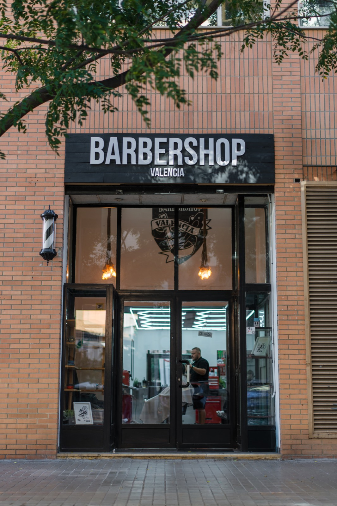

Блог
La Petxina в Валенсии: что посмотреть и лучший барбершоп района

La Petxina — район в Экстрамурсе, между старым городом и бывшим руслом Турии. Название от валенсийского petxina, раковины гребешка. Это жилой квартал: свои улицы, сад на месте реки рядом и исторический центр в пешей доступности. Наш барбершоп стоит здесь, на C/ Juan Llorens 18.
Что посмотреть в La Petxina и рядом
Район лучше всего понимается пешком. Эти остановки хорошо стыкуются с записью в кресло:
- Jardí del Túria. Парк в старом русле реки примыкает к району. Прогулка, велосипед или пауза до стрижки и после неё.
- Jardins del Real (Viveros) и Museu de Belles Arts. Через реку: сад, тень и один из главных музеев города.
- Torres de Quart. Западные ворота старой стены, по пути в Ciutat Vella. Удобная точка, если идёте дальше в El Carmen.
- Jardí Botànic. В соседнем районе El Botànic. Короткая прогулка среди растений, если хотите продлить утро.
- Сами улицы района. Juan Llorens, повседневный Extramurs и Gran Vía: кофе, дела и жизнь квартала, без поездки в центр.
Почему мы лучший барбершоп района
За хорошей стрижкой не нужно пересекать всю Валенсию. В La Petxina кресло стоит в районе, у Агустина и Диниза, и по записи, чтобы не ждать стоя.
- Мы здесь. C/ Juan Llorens 18, в La Petxina. Приходите от реки, из дома или с работы и уходите со стрижкой.
- Стригут они. Агустин и Диниз делают фейд, ножницы, бороду и уход за кожей. Один и тот же уровень на каждом визите.
- Запись заранее. Booksy или WhatsApp. Приходите к своему времени, садитесь и уходите.
- Часы работы. Понедельник–пятница 10:00–20:00, суббота 10:00–18:00.
- Важна деталь. Линия бороды, чистый фейд и мытьё, если нужно. Стрижку думают под ваше лицо, а не под общий номер.
Полное меню — в услугах и на странице La Petxina.
Стрижка, потом прогулка
Запишитесь перед выходом в Jardí del Túria или на обратном пути из Viveros. Вы выходите из барбершопа, а район остаётся рядом: река, башни и те же улицы.
Запись на стрижку в La Petxina
Агустин и Диниз ждут на C/ Juan Llorens 18. Выберите время в Booksy или напишите в WhatsApp.